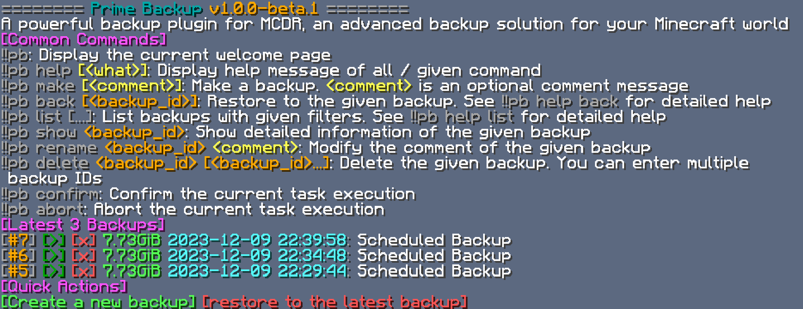

Quick Start
Install¶
Prepare MCDR¶
Prime Backup is a MCDReforged plugin,
and it requires mcdreforged>=2.12 to work
To install / update MCDReforged, you can run:
pip3 install mcdreforged>=2.12 -U
See MCDR document for more information
Install Python requirements¶
Prime Backup requires a few python libraries to run, they are all listed in the requirements.txt at the GitHub repository root
APScheduler>=3.8,<4
SQLAlchemy>=2
mcdreforged>=2.12.0
pathspec
psutil
pydantic>=2
pytz
typing_extensions
xxhash>=3
zstandard
Use command pip3 install -r requirements.txt to install all required Python requirements
You can also use the following command to install all required python packages for the latest Prime Backup in one step
pip3 install -r https://tisunion.github.io/PrimeBackup/requirements.txt
Optional requirements¶
Some Prime Backup features requires python libraries that does not listed in the requirements.txt, because it might take you some effort to install in some environments
If you want to have full features of Prime Backup, you can use the following command in advanced:
pip3 install -r https://tisunion.github.io/PrimeBackup/requirements.optional.txt
These optional requirements are also stored in the requirements.optional.txt
# hash
blake3
# compress
lz4
Install the plugin¶
Download Prime Backup from GitHub Release, and place it into the plugin folder of MCDR. Perform a MCDR plugin reload
Configure¶
Before using Prime Backup, you need to configure its config file correctly
Don't worry, for most of the config options, you can use the default values. But there are a few options that you might still want to take a look at
Location¶
When Prime Backup is firstly loaded by MCDR, it will automatically generate the config file,
with the location at config/prime_backup/config.json
mcdr_root/
└── config/
└── prime_backup/
└── config.json <-------------
It's a json file, so you need to follow the json syntax to edit it
Necessary configs¶
Here are a few important things in the config file:
-
Backup target, i.e. the directories / files you want to create backup on. You need to change the
"world"in thetargetsarray to your world directory name// root config { // ... "backup": { "targets": [ "world" ], } // ... }In addition, if you are using bukkit-like servers that split the world dimensions, you might want to use something like this:
"targets": [ "world", "world_nether", "world_the_end" ] -
The methods to calculate / store all backup data
// root config { // ... "backup": { "hash_method": "xxh128", "compress_method": "zstd", } // ... }-
hash_method: The algorithm to hash the files. Available options: "xxh128", "sha256", "blake3""xxh128": A extremely fast, high-quality non-cryptographic hash algorithm. Recommend to use, unless you want theoretic extreme safety on hackers"sha256": A cryptographically secure and widely used hash algorithm"blake3": A cryptographically secure and speedy hash algorithm. Much faster than sha256, but still slower than xxh128 Recommend to use, don't forget to install theblake3Python requirement
-
compress_method: The way the backups get compressed. Common suggestions:"plain": No compression. Use this if you want the maximum operation speed"zstd": Fast and good compression algorithm. Recommend to use you want to save some disk spaces
Note
If you want to use
blake3as the hash method, you need to install theblake3python library manually. It's not included in the default requirement list, because in some environments it might require rust runtime to build and installpip3 install blake3Note
It is recommended that you set these two options wisely from the start
Although you can still use the
!!pb database migrate_xxxcommand in MCDR to migrate the compression method and hash method of existing backups, completing the migration might require a certain amount of time and disk space -
-
Enable the plugin. Set the
enabledoption in the root object totrue. It should be at the top of the whole config file// root config { "enabled": true // ... } -
Reload the plugin with MCDR command
!!MCDR plugin reload prime_backup
Now Prime Backup should start working
Use¶
Enter !!pb in the MCDR console, or in game, you should see the welcome page as shown below
